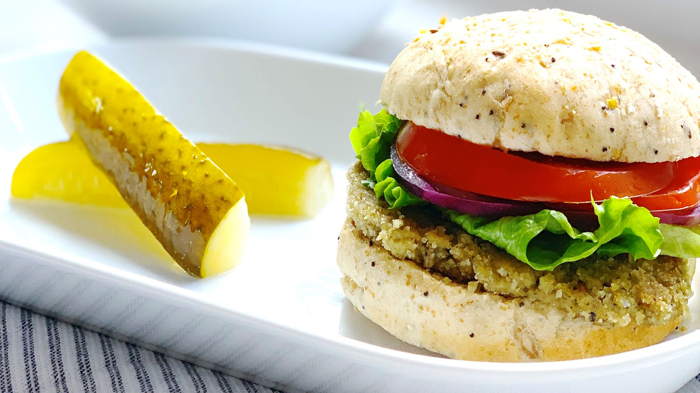
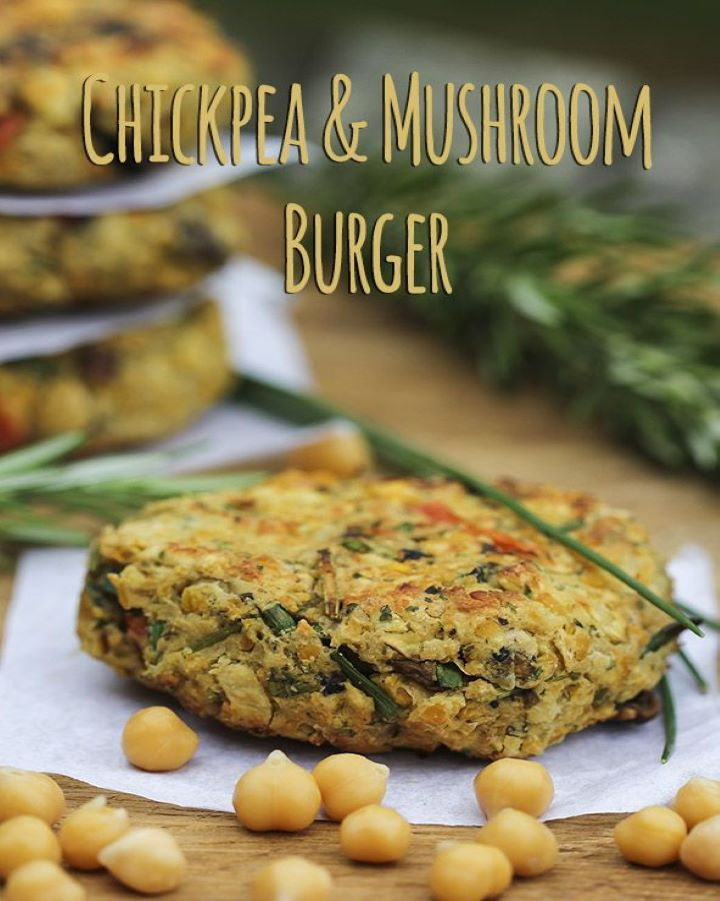
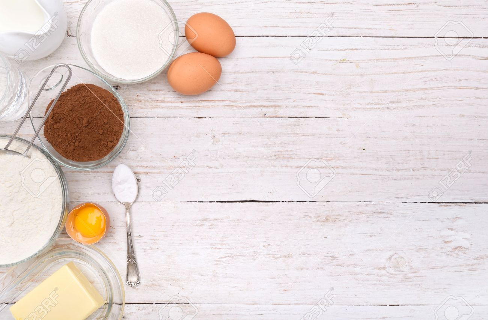

Chickpea Mushroom Burger
BY MARSHALL TAYLOR | JANUARY 2017
TRENDING:
Even if they don’t contain any meat, the taste of those chickpea patties with mushrooms & spinach could totally fool you. Purists will probably affirm the opposite, but not being a daily meat eater in my case makes it easier, they are totally fine for me. As well as my preserved lemon chicken meatballs, those chickpea patties are easy peasy to prepare and stay fresh for a few days, which make them very handy to bring to a picnic or to the office.
Available at Burger Point at $9
RELATED VIDEOS:
INGREDIENTS REQUIRED:
Video receipe of Chickpea Mushroom Burger:
PROCESS:
1.Cook quinoa in a large saucepan of lightly salted boiling water,
stirring occasionally, until tender.
2.Drain well and let cool at least 10 minutes.
3.Add garlic powder and paprika and toss a few times to coat.
4.Add mushrooms, tahini, miso, and 1/4 cup oil to bowl with chickpeas
and mash with a potato masher or fork to combine.
5.Preheat oven to 425°. Drizzle frozen patties generously with
oil on both sides
6.Top with lettuce and pickles (if using) and close up burgers.